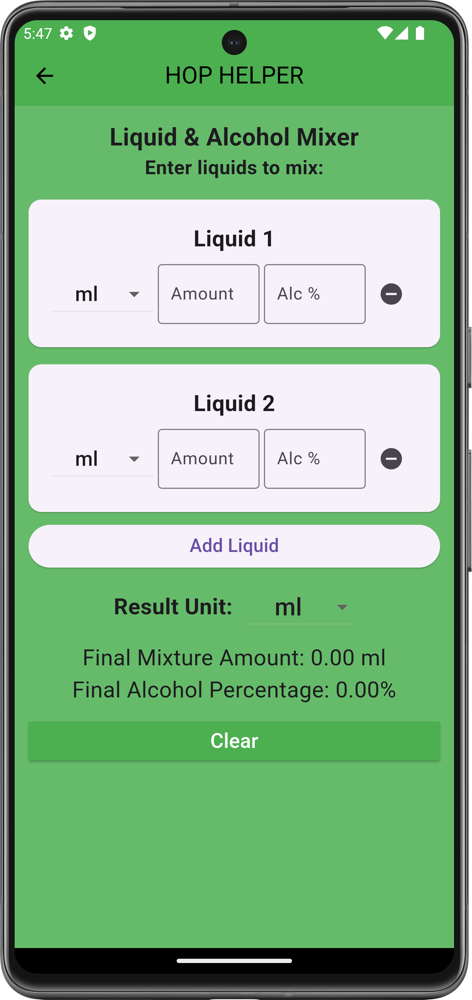

Liquid Mixer Alcohol Calculator
Tool Overview
The Liquid Alcohol Mixer is a versatile tool designed to help you determine the overall alcohol percentage when mixing different liquids with varying alcohol levels. Whether you are creating beer blends, cocktail recipes, or simply experimenting, HopHelper makes it easy to calculate the final alcohol concentration of the mixture. By using this tool, you can ensure your blends are consistent and match your desired alcohol content.
Benefits of using the Liquid Alcohol Mixer include:
- Precision in Mixing: Accurately determine the final alcohol content when mixing multiple liquids.
- Mixology and Recipe Development: Create consistent cocktail recipes or beer blends with predictable alcohol levels.
- Custom Blends: Experiment with different alcohol concentrations to develop unique flavors and achieve desired strengths.

Key Elements on the Screen
- Liquid Option Windows: The tool starts with two liquid entry windows, each containing fields for:
- Unit Selection: A dropdown menu to select the unit of measurement for the liquid (e.g., milliliters, ounces).
- Amount of Liquid: A text field to enter the quantity of liquid according to the selected unit.
- Alcohol Level: A text field to enter the alcohol level of the liquid, which can range from 0% to 100%.
- Add More Liquids Button: A button located below the initial liquid entry windows allows you to add additional liquid options, up to a total of ten different liquids.
- Final Units Selection: A dropdown menu at the bottom of the screen where you select the unit for the final mixture's results.
- Results Display: After all entries are filled, HopHelper will provide the total volume of the mixture and the overall alcohol percentage of the mixture in the selected units.
How to Use
To use the Liquid Alcohol Mixer effectively, follow these steps:
- Step 1: Enter Liquid Information: Begin by selecting the unit of measurement for each liquid. Enter the amount of liquid and the alcohol level for each entry.
- Step 2: Add More Liquids: If you want to mix more than two liquids, click the Add More Liquids button to add additional entry fields (up to ten).
- Step 3: Select Final Units: Choose the unit for the final mixture results from the Final Units Selection dropdown menu.
- Step 4: View Results: HopHelper will automatically calculate and display the total volume and overall alcohol content of the mixture at the bottom of the screen.
Additional Information
- Mixology: In mixology, understanding alcohol content is crucial for creating balanced drinks. The Liquid Alcohol Mixer helps you achieve the perfect balance of flavors and strength, ensuring consistency across different batches.
- Liquid Density and Alcohol Presence: Different liquids have different densities, which can affect how they mix and the final alcohol content of the mixture. The tool assumes that the liquids are mixed uniformly, providing an estimate of the total alcohol percentage based on volume.
- Alcohol in Mixtures: Alcohol percentage represents the amount of pure ethanol in a liquid. When combining liquids with different alcohol concentrations, understanding the final alcohol level is important for achieving the desired flavor and strength, whether you're brewing, blending, or crafting cocktails.